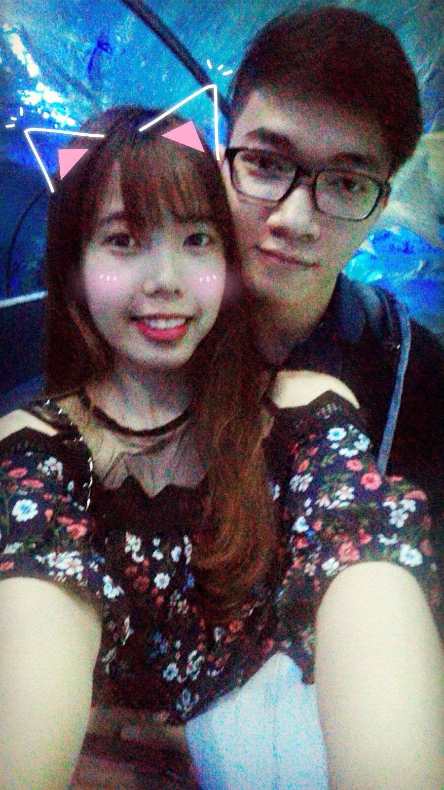
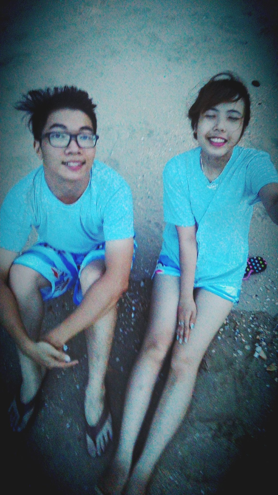
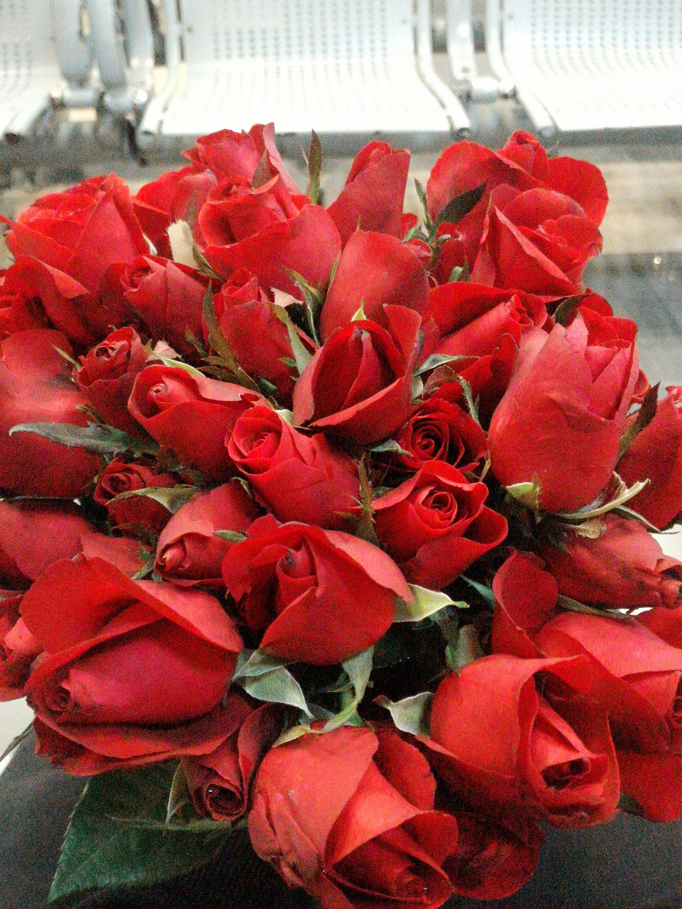
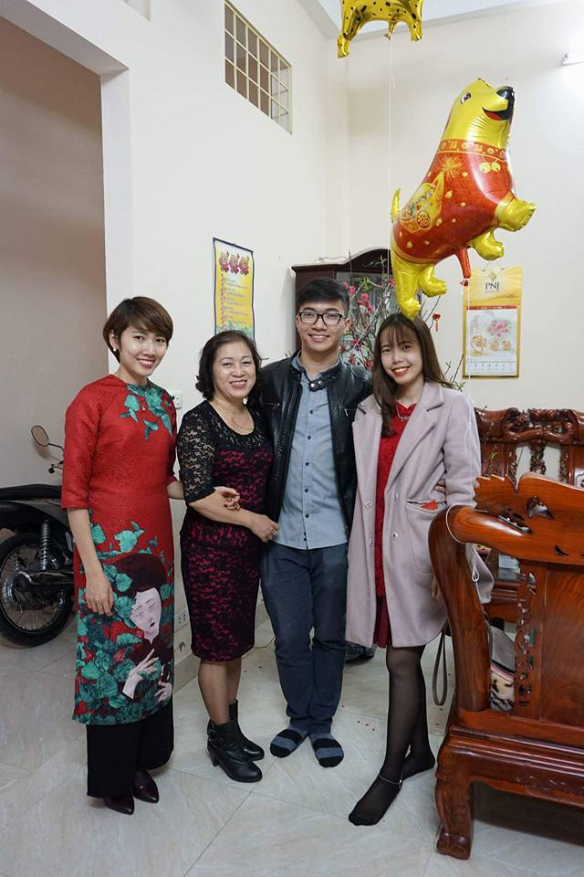
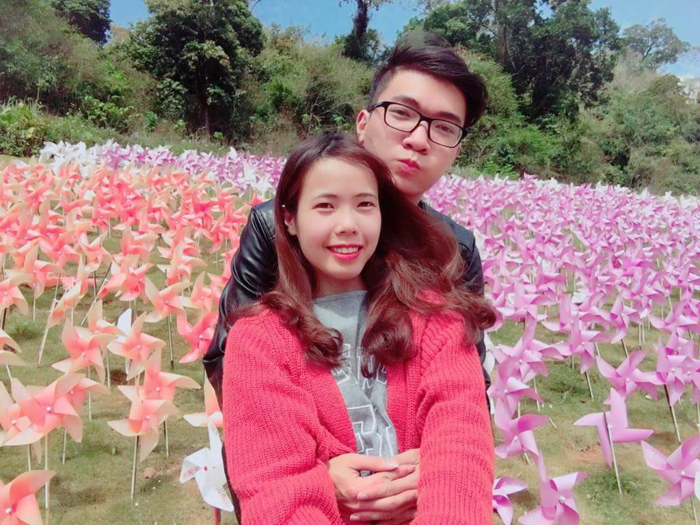
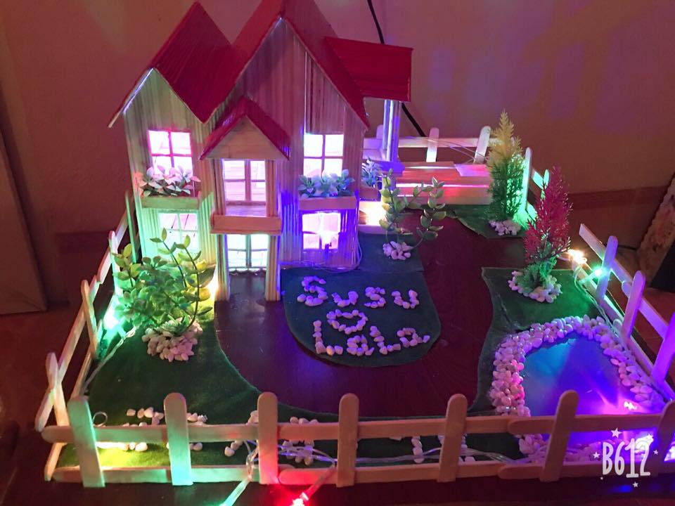
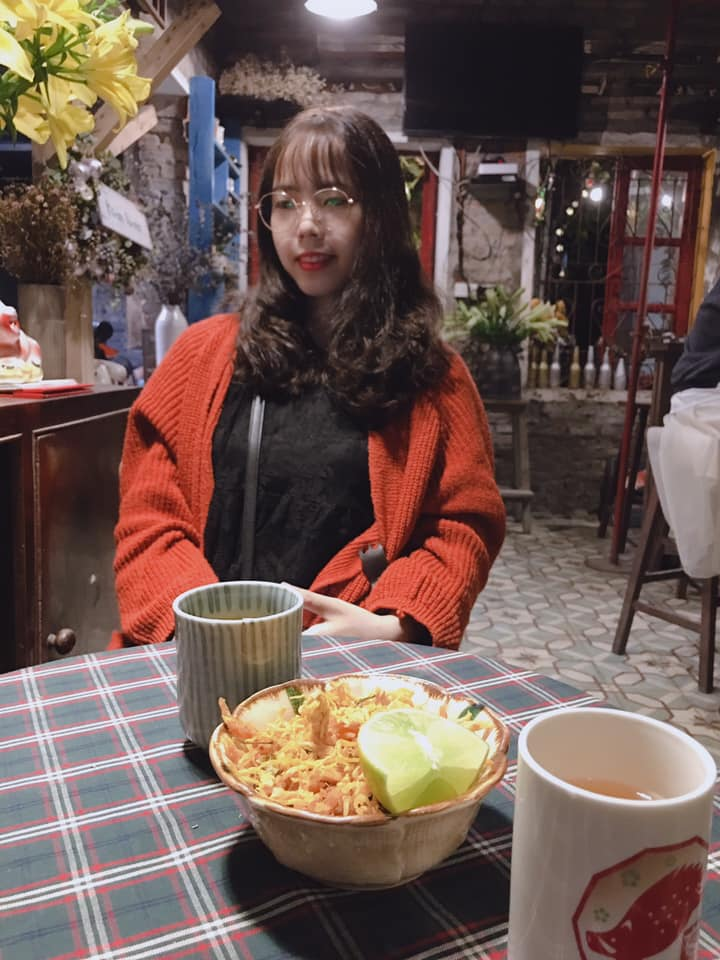
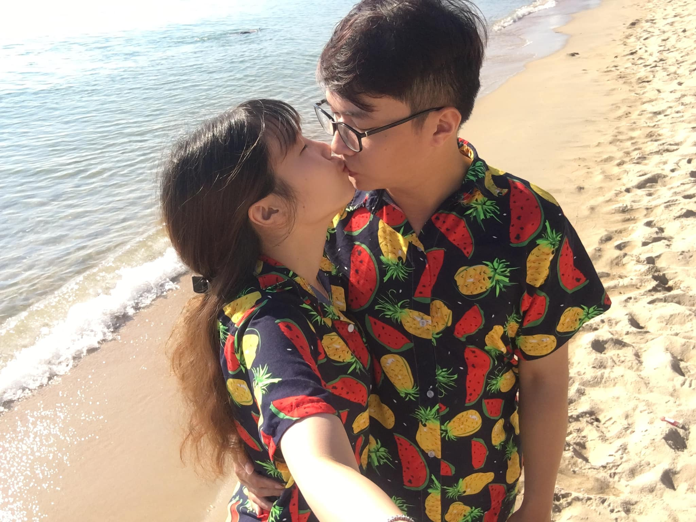

Cuộc gặp gỡ của chúng ta là khởi đầu cho tình yêu
Tình yêu của chúng ta là khởi đầu của hạnh phúc
Hạnh phúc của chúng ta đơn giản chính là được ở bên nhau


Hành trình tình yêu của chúng ta
-

Ngày hôm đó là buổi hẹn hò đầu tiên của 2 ta . Chúng mình đến với nhau là một điều anh không thể ngờ! Lúc đó anh vẫn hay nói đó là duyên phận ..
Ngày 7 tháng 4 năm 2017 -

Sau bao nhiêu ngày , anh mới có đủ dũng khí để nói lời tỏ tình với em! Em có nhớ hòn đảo đó không ? Anh thì nhớ rõ những ngày ở đó, món mực chiên thiếu muối của ông chủ nhà, phòng tắm ko có bình nóng lạnh, 2 đứa phải bôi kem chống muỗi khi ngủ vì ...phòng quá nhiều muỗi, lúc em đi trên biển bị mảnh vỏ cứa vào chân chảy máu nữa ❤ Cuối cùng anh đã nói được câu Anh ❤ Em nhiều lắm!
Ngày 19 tháng 6 năm 2017 -

Lúc đó anh chỉ nghĩ khi đón người yêu ngoài sân bay người ta sẽ làm gì nhỉ. Và anh nghĩ tới mấy cảnh trong phim :)) Em à , Anh chỉ muốn giành tất cả những gì tốt nhất cho em thôi. Cho đến giờ và sau này vẫn sẽ mãi như vậy ❤
Ngày 22 tháng 11 năm 2017 -
Nhưng rồi lâu dần, chúng ta trải qua những lúc không hiểu nhau! Anh đã làm em buồn. Cảm ơn em vì đã luôn tin tưởng anh và cho tình yêu của chúng ta được bước tiếp!
In 2017 -

Tết phải tranh thủ dẫn cô người yêu về ngay :)) Váy đỏ anh chọn đẹp mà sao em cứ chê không biết !
Ngày 18 tháng 2 năm 2018 -

Ăn tết xong cái là lên đường đi ngay được :3 Mộc châu đẹp quá phải không em? Nhiều người cứ nói bọn mình phô trương ,khoe này khoe nọ như trẻ con thế không bền đâu. Anh chỉ cười chẳng nói gì , cứ để thời gian sẽ chứng minh cho họ thấy em nhờ ❤ Miễn sao bọn mình vui và hạnh phúc , anh không để ý quá nhiều đến mọi thứ xung quanh đâu!
Ngày 27 tháng 2 năm 2018 -

Ngôi nhà hạnh phúc của chúng mình này ^^ Mất 1 tuần làm ngày làm đêm của anh đó . Tình yêu thời còn trẻ đúng là cuồng nhiệt nhất em nhỉ. Không lo toan công việc , thời gian mà cả ngày chỉ nghĩ làm thế nào để cục cưng của anh được vui ❤
Ngày 22 tháng 8 năm 2018 -
Nhất định 1 ngày nào đó , bản đồ du lịch Việt Nam sẽ lấp đầy dấu chân của bọn mình em nhỉ. Qua bao nhiêu địa điểm , Đà nẵng vẫn là nơi anh ước ao được quay lại nhất. Đồ ăn , con người , không khí, cảnh vật mọi thứ đều hoàn hảo . Về già chỉ muốn được ở đó dưỡng già vs em thôi :<
Ngày 12 tháng 9 năm 2018 -

Anh vẫn nhớ cái ngày anh nhận được cú điện thoại từ phòng thanh tra. Lúc đó lại đang ngay bên cạnh em nữa chứ.Bần thần mất 1 lúc , có lẽ cũng không quá ngạc nhiên vì đã dự đoán từ trước. Cảm thấy oan ức nhưng chẳng thể làm gì được .Và rồi từ đó , anh cảm thấy chẳng có điều gì có thể khiến anh sợ hay lo lắng trong công việc được nữa. Nhiều người bảo vậy là ko tốt , nhưng nó giúp anh luôn giữ vững bình tĩnh để giải quyết mọi việc .Đến bây giờ nghĩ lại , có lẽ anh nên biết ơn là có cái ngày đó thì tâm lý a mới vững vàng được như ngày hôm nay. Nhưng chẳng hiểu sao đứng trước em anh lại chẳng thể cứng được như vậy :))) Có lẽ vì anh sợ sẽ mất em... Cảm ơn em vì đã cùng anh vượt qua những ngày giông bão ❤
Tháng 11 năm 2018 -

Đợt này là vừa khỏi ốm được 1 hôm xong đòi đi chơi cho bằng được này. Cô gái của anh ngang ngược lắm, khó dỗ dành lắm.Nhưng chẳng biết sao anh ko thể giận em được . Vì anh hiền , anh ko biết giận , hay vì đã lỡ quá yêu em ? ❤
Ngày 16 tháng 11 năm 2019 -

Cầu hôn ở Nha Trang thì tuyệt đấy , nhưng ko theo kịch bản anh nghĩ gì cả :))) Anh đã định vùi nó trong cát cơ , nhưng nghĩ lỡ sóng biển cuốn đi thì toang mất :)) Cuối cùng cũng nói được lời cầu hôn vs em sau bao ngày ấp ủ ... Sắp được về chung 1 nhà rồiiiiiiiiiiiii ❤
Ngày 5 tháng 6 năm 2020 -
Chính thức là vợ chồng , bắt đầu chuỗi ngày bị bắt nạt :))) Anh đùa thôi, sướng phát điên đi được , cười toe toét từ đầu đến cuối ngày :> Mỗi ngày trôi qua dù mệt mỏi đến đâu, đến cuối ngày được ôm em đi ngủ là mọi muộn phiền tan biến hết!
Ngày 26 tháng 10 năm 2020
{kind=link}
{kind=link}
{kind=link}
{kind=link}
{kind=link}
{kind=link}
{kind=link}
{kind=link}
{kind=link}
{kind=link}